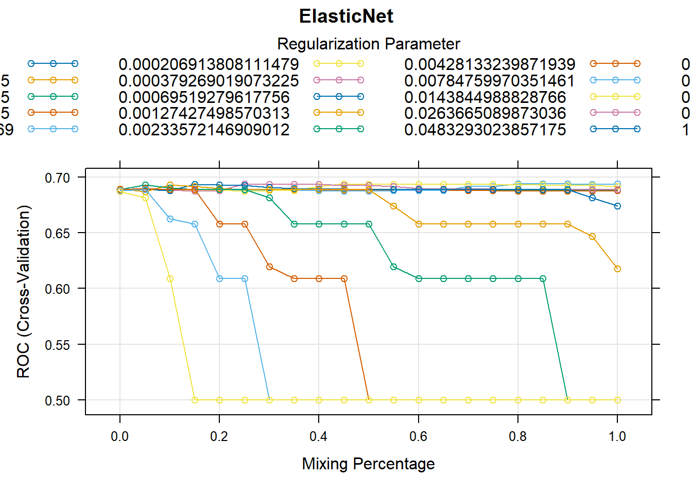

| Variable | Summary |
|---|---|
| WEAPON_FLAG_COUNT | Min. -0.4 1st Qu. -0.4 Median -0.4 Mean 0 3rd Qu. -0.4 Max. 5.4 |
| STOP_DURATION_MINUTES | Min. -0.66 1st Qu. -0.4 Median -0.26 Mean 0 3rd Qu. 0.13 Max. 65.35 |
| SUSPECT_ACTIONS_COUNT | Min. -0.88 1st Qu. -0.88 Median 0.55 Mean 0 3rd Qu. 0.55 Max. 6.3 |
| SUSPECT_RACE_DESCRIPTION | Hispanic: 15680: (29.98%) Other: 397: (0.76%) WHITE: 4346: (8.31%) BLACK: 30757: (58.81%) Asian: 1117: (2.14%) |
| PHYSICAL_FORCE_CEW_FLAG | N: 52043: (99.51%) Y: 254: (0.49%) |
| PHYSICAL_FORCE_DRAW_POINT_FIREARM_FLAG | N: 49961: (95.53%) Y: 2336: (4.47%) |
| PHYSICAL_FORCE_HANDCUFF_SUSPECT_FLAG | N: 43132: (82.48%) Y: 9165: (17.52%) |
| PHYSICAL_FORCE_OC_SPRAY_USED_FLAG | N: 52289: (99.98%) Y: 8: (0.02%) |
| PHYSICAL_FORCE_OTHER_FLAG | N: 51165: (97.84%) Y: 1132: (2.16%) |
| PHYSICAL_FORCE_RESTRAINT_USED_FLAG | N: 51034: (97.58%) Y: 1263: (2.42%) |
| PHYSICAL_FORCE_VERBAL_INSTRUCTION_FLAG | N: 3186: (6.09%) Y: 49111: (93.91%) |
| PHYSICAL_FORCE_WEAPON_IMPACT_FLAG | N: 52283: (99.97%) Y: 14: (0.03%) |
| SUSPECT_ARRESTED_FLAG | N: 34513: (65.99%) Y: 17784: (34.01%) |
Project Report
Introduction (Kristina)
Problem Description
Study Design and Sampling Methods
Scientific Questions to Investigate
Overview of Conclusions
Chosen Model
- XGBoost: The best performing model based on the test metrics of AUC, Kappa, and Accuracy.
Key Findings
- Though Blacks account for ~59% of the Stop, Question, and Frisk data, the proportions of those arrested based on any given race do not serve as a good predictor of whether an arrest will be made.
Roadmap to Follow
The Methods section describes the statistical models used, the steps of data preprocessing, and the procedures for hyperparameter tuning. Additionally, visual and numeric summaries of the data are discussed to set the context for the analysis. The modeling methodology is presented in detail, with a comparison of multiple models and their performance criteria.
Here, we also address the scientific questions identified in the Introduction. The results from the models are presented and interpreted, highlighting key findings and their implications.
The Conclusions section summarizes the study objectives, the findings from the analysis, and how they relate to the overall project goals. Additional observations and limitations of the analysis are also discussed.
The Appendix houses tables, source code, and supplementary plots for reference.
Data Source Reference
Methods
1. Prior to Modeling
Data Preprocessing Steps
The data was cleaned, transformed, and structured to suit the requirements of the statistical machine learning algorithms for our predictive models. The following steps were taken:
Data from multiple years (2018–2023) was read and combined into a single dataset. Column names were standardized by converting them to uppercase and replacing spaces with underscores for consistency. An additional column was added to indicate the year each record belonged to.
Strings such as “(null)” were identified as placeholders for missing data and replaced with proper
NAvalues to facilitate further processing.Several columns, particularly those representing numeric data like suspect height, weight, and stop durations, were converted from character strings to numeric.
Time and Date columns were converted to the appropriate data types for analysis.
Binary flag variables, containing values such as
Y,N,NA, and occasionally invalid entries like(, were handled with special consideration to ensure usability in modeling. This process involved the following rules:- Columns with Only Y and
NAValues: If a column contained onlyYand NA, theNAvalues were imputed with N. This assumption was made based on the interpretation that the absence of aYflag implied the event did not occur. - Columns with
Y,NA, and(Values: First, allNAvalues were replaced withN. Then, invalid entries represented by(were converted toNA. This ensured no invalid characters remained in the dataset. - Columns with
Y,N,NA, and(Values: Invalid entries (() were replaced withNA. ExistingY,N, andNAvalues were left unchanged, maintaining the integrity of the valid binary flags. - Other Scenarios: For Flag columns not fitting the above patterns, the values were left as-is, as they did not conform to predefined rules or patterns for binary flags.
- Columns with Only Y and
The extent of missingness across columns was evaluated. Variables with excessive missing data (more than 10,000 missing values) were excluded from further consideration. Remaining rows with missing values were removed to create a complete dataset.
Remaining character variables were converted into factors to enable categorical analyses. Some factors, like SUSPECT_RACE_DESCRIPTION, were consolidated by merging specific levels (e.g., “Black Hispanic” and “White Hispanic” were grouped under “Hispanic”).
New predictors were created by aggregating related binary flag variables:
- Physical Force Count: Summed all physical force-related flags to capture the intensity of force used.
- Suspect Actions Count: Consolidated actions taken by suspects into a single predictor.
- Weapon Flag Count: Combined multiple weapon-related flags into one variable representing the presence of any weapon.
All numeric columns were standardized by centering and scaling. This ensured that variables with different units or scales were treated equitably by the models.
Variables deemed irrelevant or redundant, such as geographic coordinates (STOP_LOCATION_X, STOP_LOCATION_Y) were excluded. The final dataset was saved for use in modeling.
Selected Variables and Data Summaries
SUSPECT_RACE_DESCRIPTION may capture systemic or situational biases, influencing how interactions escalate and the resulting arrest probabilities.
Physical Force actions such as Handcuffs and OC Spray typically occur in escalated situations which can often lead to arrests.
Verbal Commands and Observed Actions are more common and may not necessarily lead to arrests. These reflect observed behaviors that may contribute to escalation or suspicion however.
Weapon involvement naturally heightens the intensity of the encounter and would likely increase arrest likelihood.
STOP_DURATION_MINUTES provides a measure of the stop’s complexity or escalation over time, with longer stops potentially indicating more contentious or involved interactions.
2. Statistical Models and Methods
We follow the guidelines for statistical modeling laid out in the Model Building and Data Splitting lecture notes.
Split the data into a training set and a test set.
Tune hyperparameters (of all the models under consideration) using the training set:
- Split the training set further into two sets: one for fitting the model (a new training set), and the other for evaluating model performance (known as validation set or holdout set).
- For each candidate value of hyperparameter(s), fit the model using the new training set, and evaluate the fitted model using the validation set using a metric of our choice.
- Typically, we repeat steps a. and b. a few times so that we get repeated measurements of model performance for each value of hyperparameters. The final model performance is taken to be the average of these multiple measurements.
- Choose the best value of hyperparameters by optimizing the model performance measure obtained in step c.
Using the best value of hyperparameters, fit the model(s) on the entire training set and estimate the model parameters. This is (are) the final model(s) chosen using the training set.
Use the test set to estimate the model performance of the final model(s) from step 3.
Again, we may want to repeat steps 1–4 a few times to get a reliable estimate of model performance of the final models. For example, we can use cross-validation here to incorporate the uncertainty due to hyperparameter tuning as well.
By leveraging the caret package in R, we can efficiently implement the above steps for a variety of models. The train() function in caret will handle steps 2 and 3 for us. This can be termed the “inner loop”. After tuning hyperparameters and fitting the final trained model, we can then evaluate the various models on the test set. This can be termed the “outer loop”.
To evaluate the models in the outer loop and the very first step when modeling began, we used a 70/30 split, where 70% of the data was used for training and 30% for testing. This is known as the holdout method. For training in the inner loop, 5-fold cross validation was used on the training data split. The test data was never used in the inner loop, only for evaluating the final model performance.
Model Descriptions and Assumptions
Random Forest - Improves prediction accuracy by combining multiple decision trees. Each tree is trained on a random bootstrap sample of the data, and at every split, only a random subset of predictors is considered. This medigates the correlation between trees when a certain predictor may be present in all trees, reducing their variance and improving the robustness of the predictions.
Extreme Gradient Boosting (XGBoost) - Builds models sequentially, each new tree correcting errors made by previous ones, and optimizes a loss function. XGBoost also uses regularization, meaning it penalizes complex models to prevent overfitting.
Logistic Regression - Models the relationship between a set of predictor variables and a binary outcome by estimating the probability of the outcome occurring, using the logistic function to ensure probabilities fall between 0 and 1. The method identifies linear relationships between predictors and the log-odds of the outcome
Elastic Net - A regularized regression method that combines the penalties of Lasso and Ridge regression. It balances variable selection and shrinkage by minimizing prediction error while preventing overfitting.
Model Comparisons
In training and tuning the models, we instructed caret to use the AUC metric as described further below. This metric was chosen because it is a robust measure of model performance compared to accuracy.
We will also consider AUC in our comparisons between models, as well as other metrics such as LogLoss, Kappa, and Accuracy. These metrics will help us evaluate the models’ performance on the test set and determine which model is best suited for our predicting our response and generalizing to new data.
Trained Model Summaries
The following plots summarize the performance of the models on the training data. The boxplots show the distribution of the AUC metric during cross-validation and model tuning. This provides a convenient visual comparison of their performance.
We see in our model tuning that the XGBoost model appears to have a better metric distribution compared to the other models. This suggests that XGBoost may be the best model for our data. And indeed, this similar performance is confirmed by the test metrics results that will be discussed in the next section.
Variables of Importance
WEAPON_FLAG_COUNT and PHYSICAL_FORCE_HANDCUFF_SUSPECT were consistently amongst the top 3 variables of importance across all models. This suggests that the presence of a weapon and the use of handcuffs are strong predictors of whether a suspect will be arrested.
The suspect’s Race description is found to be somewhat important (5th) in the Random Forest. This was it’s highest showing across the tested models in ranked order of importance.
Tuning Parameters
The Hyperparameter Tuning Plots show the manner in which the hyperparameters were chosen for each model. These plots provide insight into the tuning process and the values selected for the final models. A summary table is also provided with the best tuning parameters for each model.
Scientific Questions and Results Interpretation (Kristina)
Performance Investigation and Criteria
We evaluate several metrics to compare the performance of the models as they generalize to our test set. These metrics include: AUC, LogLoss, Kappa, and Accuracy.
Metrics Used for Model Evaluation
AUC (Area Under the Receiver Operating Characteristic Curve) - was used as our training metric of choice during model tuning. AUC measures how correctly a model distinguishes between true outcomes and false outcomes across all possible boundaries between classes. A model with a larger AUC value can be said to better distinguish between true and false outcomes across all boundaries between classes.
LogLoss - quantifies how uncertain a model is about its predictions, penalizing incorrect predictions with greater uncertainty. A model with a smaller LogLoss value can be said to make more confident and accurate predictions because it assigns higher probabilities to correct outcomes and lower probabilities to incorrect ones, minimizing uncertainty.
Kappa - measures how correct a model’s predictions are compared to actual outcomes, while accounting for correctness expected by random chance. A model with a larger Kappa value can be said to make predictions that are more correct relative to chance alone.
Accuracy - is the proportion of correctly predicted outcomes out of all predictions made. Included for its simplicity and interpretability.
Test Metrics Results Summary
A visual perspective of model performance can be found in Test Metrics Results. The accompanying table summarizes the test metrics for each model, providing a comparison of their performance on the test set.
The best model will be determined based on the combination of these metrics, with a focus on AUC, LogLoss, and Kappa. The model that consistently performs well across these metrics will be considered the best model for our predictive purposes.
Limitations of Methods
1. Data Preprocessing:
- Binary Flags: Simplified handling of missing or invalid entries (e.g., replacing
NAwithN) was an assumption and may have introduced bias. - Aggregating multiple binary flags into predictors (e.g., Suspect Action Count) simplifies the data but may lose nuanced information about individual variables.
2. Modeling Limitations:
- Hyperparameter Tuning: Though the Tuning was given a fair range to explore, it was primarily left to default behavior in
caret. More rigorous tuning may have produced better models with more exacting hyperparameters. - Evaluation Metrics: The models were primarily evaluated using metrics like AUC, LogLoss, Kappa, and Accuracy. (AUC explicitely in training.) While these metrics provide a robust comparison, they focus on different aspects of model performance, and prioritizing one metric over another could bias tuning or model selection.
- Holdout Method: The 70/30 split used testing may not be optimal. Cross-validation in the outer loop could provide a more robust estimate of model performance.
3. Contextual Factors:
- Ethical Concerns: Systemic and situational biases in the dataset may influence predictions and reinforce existing inequities. Predictive models trained on such data may inadvertently reinforce these biases.
Conclusions (Kristina)
Study Objectives Summary
Findings and Interpretation
Project Goals and Outcomes
Additional Observations
Appendix
Figures and Tables
A. Data Summaries
Note: The summary statistics below are based on the training data only. Numeric vairables have been standardized.
Table of modeled variables and their summaries.
B. Variable Importance Plots
[[1]]
[[2]]
[[3]]
[[4]]
C. Tuning Parameters
| Model | Best Tuning Parameters |
|---|---|
| XGBoost | nrounds 350.000 max_depth 2.000 eta 0.300 gamma 0.000 colsample_bytree 0.800 min_child_weight 1.000 subsample 0.889 |
| ElasticNet | alpha 0.800 lambda 0.008 |
| LogisticRegression | No tuning parameters |
| RandomForest | mtry 6.000 |
Table of best tuning parameters for each model.
[[1]]

[[2]]
[[3]]
NULL
[[4]]D. Trained model summaries

E. Test Metrics
| Metric | Models and Values |
|---|---|
| AUC | XGBoost: 0.722 ElasticNet: 0.688 RandomForest: 0.683 LogisticRegression: 0.682 |
| Accuracy | XGBoost: 0.729 RandomForest: 0.725 LogisticRegression: 0.716 ElasticNet: 0.714 |
| Kappa | XGBoost: 0.327 RandomForest: 0.309 LogisticRegression: 0.276 ElasticNet: 0.266 |
| LogLoss | ElasticNet: 0.810 LogisticRegression: 0.822 XGBoost: 0.856 RandomForest: 10.768 |
Table of test metrics summary for each model.
F. Source Code
EDA
Code
library(tidyverse)
library(readxl)
library(writexl)
library(ggplot2)
library(gridExtra)
library(ggpubr)
library(readxl)
library(caret)
library(glmnet)
library(Boruta)
library(randomForest)
## Read xlsx Files from 2018 to 2023
# File path and names
file_names <- c("sqf-2018", "sqf-2019", "sqf-2020", "sqf-2021", "sqf-2022", "sqf-2023")
# Function to read and coerce all columns to character
standardize_dataset <- function(file_name) {
year <- as.numeric(str_extract(file_name, "\\d{4}"))
read_excel(paste0(file_name, ".xlsx")) |>
set_names(~ toupper(gsub(" ", "_", .))) |>
mutate(across(everything(), as.character)) |>
mutate(FILE_YEAR = as.character(year))
}
# Read and combine data
sqf_combined <- file_names |>
map(standardize_dataset) |>
bind_rows()
sqf_combined_sorted <- sqf_combined %>%
select(all_of(sort(names(sqf_combined))))
options(width = 100)
glimpse(sqf_combined_sorted)
## Strange Null Values to NA
sqf_combined <- sqf_combined |>
mutate(across(everything(), ~ na_if(., "(null)")))
## Numeric Columns
sqf_combined <- sqf_combined |>
mutate(
SUSPECT_HEIGHT = as.numeric(SUSPECT_HEIGHT),
SUSPECT_WEIGHT = as.numeric(SUSPECT_WEIGHT),
SUSPECT_REPORTED_AGE = as.numeric(SUSPECT_REPORTED_AGE),
STOP_DURATION_MINUTES = as.numeric(STOP_DURATION_MINUTES),
OBSERVED_DURATION_MINUTES = as.numeric(OBSERVED_DURATION_MINUTES),
STOP_LOCATION_X = as.numeric(STOP_LOCATION_X),
STOP_LOCATION_Y = as.numeric(STOP_LOCATION_Y)
)
## Stop Frisk Time
sqf_combined |>
filter(!str_detect(STOP_FRISK_TIME,
"^\\d{2}:\\d{2}:\\d{2}$")) |>
select(STOP_FRISK_TIME) |>
distinct()
sqf_combined <- sqf_combined |>
mutate(
STOP_FRISK_TIME = if_else(
str_detect(STOP_FRISK_TIME,
"^1899-12-31 \\d{2}:\\d{2}:\\d{2}$"),
str_extract(STOP_FRISK_TIME,
"\\d{2}:\\d{2}:\\d{2}$"),
NA_character_
)
)
sqf_combined <- sqf_combined |>
mutate(
STOP_FRISK_DATE = as.Date(STOP_FRISK_DATE,
format = "%Y-%m-%d"),
STOP_FRISK_TIME = hms::as_hms(STOP_FRISK_TIME)
)
## Missingness
get_na_summary <- function(data) {
data |>
summarise(across(everything(), ~ sum(is.na(.)))) |>
pivot_longer(cols = everything(),
names_to = "Column",
values_to = "NA_Count") |>
arrange(desc(NA_Count)) |>
print(n = Inf)
}
get_na_summary(sqf_combined)
## Flag Variables
# Step 1: Identify FLAG/FLG columns
flag_columns <- sqf_combined |>
select(contains("FLAG"), contains("FLG")) |>
colnames()
# Glimpse unique values in FLAG/FLG columns
sqf_combined |>
select(all_of(flag_columns)) |>
summarise(across(everything(), ~ list(unique(.)))) |>
pivot_longer(everything(), names_to = "Column", values_to = "Unique_Values") |>
mutate(Unique_Values = map_chr(Unique_Values, ~ paste(.x, collapse = ", "))) |>
print(n = Inf)
### Impute NA to N in FLAG Columns
#- Only "Y" and NA present: Replace NA with "N"
#- "Y", NA, and "(" present: Replace "(" with NA, and NA with "N"
#- "Y", "N", NA, and "(" present: Replace "(" with NA
process_flag_column <- function(column) {
unique_vals <- unique(column)
if (all(unique_vals %in% c("Y", NA))) {
return(if_else(is.na(column), "N", column))
} else if (all(unique_vals %in% c("Y", NA, "("))) {
column <- if_else(is.na(column), "N", column) # First replace NA with "N"
return(if_else(column == "(", NA_character_, column)) # Then replace "(" with NA
} else if (all(unique_vals %in% c("Y", "N", NA, "("))) {
return(if_else(column == "(", NA_character_, column))
} else {
return(column)
}
}
sqf_combined <- sqf_combined |>
mutate(across(all_of(flag_columns), process_flag_column))
sqf_combined |>
select(all_of(flag_columns)) |>
summarise(across(everything(), ~ list(unique(.)))) |>
pivot_longer(everything(), names_to = "Column", values_to = "Unique_Values") |>
mutate(Unique_Values = map_chr(Unique_Values, ~ paste(.x, collapse = ", "))) |>
print(n = Inf)
## Missingness
na_summary <- get_na_summary(sqf_combined)
na_summary
## Working Dataset
### Drop Columns with High Missingness
# filter columns with high missingness
useful_cols <- na_summary |>
filter(NA_Count < 10000) |>
select(Column)
# use useful_cols to filter columns and remove NA
working_dataset <- sqf_combined |>
select(all_of(useful_cols$Column)) |>
drop_na()
glimpse(working_dataset)
## Type Conversions for remaining predictors
# Define columns to exclude
excluded_columns <- c(
"STOP_LOCATION_FULL_ADDRESS",
"DEMEANOR_OF_PERSON_STOPPED",
"STOP_FRISK_DATE",
"YEAR2",
"MONTH2",
"DAY2",
"FILE_YEAR",
"STOP_LOCATION_X",
"STOP_LOCATION_Y"
)
# Drop excluded columns
working_dataset <- working_dataset %>%
select(-all_of(excluded_columns))
# Identify character columns to convert to factors
factor_columns <- working_dataset %>%
select(where(is.character)) %>%
colnames()
# Convert character columns to factors and ensure SUSPECT_RACE_DESCRIPTION stays a factor
working_dataset <- working_dataset %>%
mutate(across(all_of(factor_columns), ~ factor(make.names(as.character(.))))) %>%
mutate(SUSPECT_RACE_DESCRIPTION = factor(make.names(as.character(SUSPECT_RACE_DESCRIPTION))))
# Verify structure
str(working_dataset)
## Check unique values in factor columns
columns_of_interest <- c("SUSPECT_EYE_COLOR",
"SUSPECT_HAIR_COLOR",
"SUSPECT_BODY_BUILD_TYPE",
"SUSPECTED_CRIME_DESCRIPTION",
"STOP_LOCATION_PATROL_BORO_NAME",
"STOP_LOCATION_BORO_NAME")
# Map unique to each column and store the result
unique_values <- map(columns_of_interest, ~ unique(working_dataset[[.x]]))
# Name the results for clarity
names(unique_values) <- columns_of_interest
unique_values
## Clean SUSPECT_HAIR_COLOR with "(nu" to NA
# Also drop any unused levels that are present
sum(working_dataset$SUSPECT_HAIR_COLOR == "(nu", na.rm = TRUE)
working_dataset$SUSPECT_HAIR_COLOR[working_dataset$SUSPECT_HAIR_COLOR == "(nu"] <- NA
# Remove rows with NA values in the SUSPECT_HAIR_COLOR column
working_dataset <- working_dataset[!is.na(working_dataset$SUSPECT_HAIR_COLOR), ]
working_dataset <- droplevels(working_dataset)
str(working_dataset)
# Look at level counts
factor_levels <- sapply(data, function(x) if (is.factor(x)) nlevels(x) else NA)
# Display results
factor_info <- data.frame(
Predictor = names(factor_levels),
Levels = factor_levels
)
# Show predictors that are factors with their number of levels
factor_info <- factor_info[!is.na(factor_info$Levels), ]
print(factor_info)
# Drop RECORD_STATUS_CODE
working_dataset <- working_dataset %>%
select(-RECORD_STATUS_CODE)
# Response Variable
table(working_dataset$SUSPECT_RACE_DESCRIPTION)
working_dataset <- working_dataset %>%
# Convert to character to avoid factor level issues
mutate(SUSPECT_RACE_DESCRIPTION = as.character(SUSPECT_RACE_DESCRIPTION)) %>%
# Consolidate levels using case_when
mutate(SUSPECT_RACE_DESCRIPTION = case_when(
SUSPECT_RACE_DESCRIPTION %in% c("AMERICAN.INDIAN.ALASKAN.N", "AMERICAN.INDIAN.ALASKAN.NATIVE") ~ "Other",
SUSPECT_RACE_DESCRIPTION %in% c("MIDDLE.EASTERN.SOUTHWEST", "MIDDLE.EASTERN.SOUTHWEST.ASIAN") ~ "Other",
SUSPECT_RACE_DESCRIPTION == "ASIAN...PACIFIC.ISLANDER" ~ "Asian",
SUSPECT_RACE_DESCRIPTION %in% c("BLACK.HISPANIC", "WHITE.HISPANIC") ~ "Hispanic",
TRUE ~ SUSPECT_RACE_DESCRIPTION
)) %>%
# Convert back to factor to remove unused levels
mutate(SUSPECT_RACE_DESCRIPTION = factor(SUSPECT_RACE_DESCRIPTION, levels = unique(SUSPECT_RACE_DESCRIPTION)))
# Verify the result
table(working_dataset$SUSPECT_RACE_DESCRIPTION)
# Flag Counts
working_dataset <- working_dataset |>
mutate(PHYSICAL_FORCE_COUNT = rowSums(across(contains("PHYSICAL_FORCE"),
~ . == "Y")))
# Consolidate suspect actions flags into a single predictor
working_dataset <- working_dataset |>
mutate(SUSPECT_ACTIONS_COUNT = rowSums(across(contains("SUSPECTS_ACTIONS"),
~ . == "Y")))
# Consolidate weapon flags into a single predictor
weapon_flags <- c("FIREARM_FLAG",
"KNIFE_CUTTER_FLAG",
"OTHER_WEAPON_FLAG",
"WEAPON_FOUND_FLAG")
working_dataset <- working_dataset |>
mutate(WEAPON_FLAG_COUNT = rowSums(across(weapon_flags, ~ . == "Y")))
str(working_dataset)
# Save dataset
write_xlsx(working_dataset, 'working_dataset.xlsx')
saveRDS(working_dataset, "working_dataset.rds")
## Different Variables on Race
# Suspected crime vs. race
data <- working_dataset
stacked_bar <- function(var) {
ggplot(data, aes(x = .data[[var]], fill = SUSPECT_ARRESTED_FLAG)) +
geom_bar(position = 'fill') +
labs(
title = var,
x = var,
y = ''
) +
theme_minimal() +
theme(
axis.text.x = element_text(angle = 90, hjust = 1)
) +
scale_fill_manual(values=c('hotpink', 'purple'))
}
variables <- c('SUSPECT_RACE_DESCRIPTION',
'PHYSICAL_FORCE_VERBAL_INSTRUCTION_FLAG',
'PHYSICAL_FORCE_WEAPON_IMPACT_FLAG',
'PHYSICAL_FORCE_RESTRAINT_USED_FLAG',
'PHYSICAL_FORCE_OTHER_FLAG',
'PHYSICAL_FORCE_OC_SPRAY_USED_FLAG',
'PHYSICAL_FORCE_HANDCUFF_SUSPECT_FLAG',
'PHYSICAL_FORCE_DRAW_POINT_FIREARM_FLAG',
'PHYSICAL_FORCE_CEW_FLAG',
'WEAPON_FLAG_COUNT',
'SUSPECT_ACTIONS_COUNT',
'SUSPECT_ARRESTED_FLAG')
# Apply the function to each variable
plots <- lapply(variables, stacked_bar)
# Display the plots (e.g., in a grid)
ggarrange(
plotlist = plots,
ncol = 2
)
stacked_bar('SUSPECTED_CRIME_DESCRIPTION')
boxplots <- function(var) {
n <- max(data[[var]], na.rm = TRUE)
ggplot(data, aes(x=.data[[var]], color=SUSPECT_ARRESTED_FLAG,
fill=SUSPECT_ARRESTED_FLAG)) +
geom_boxplot() +
scale_fill_manual(values=c("hotpink", "purple")) +
theme(
legend.position="none",
panel.spacing = unit(0.1, "lines"),
strip.text.x = element_text(size = 8)
) +
labs(
title = var,
x = var) +
xlim(0, n) +
facet_wrap(~SUSPECT_ARRESTED_FLAG)
}
variables <- c('STOP_DURATION_MINUTES')
# Apply the function to each variable
plots <- lapply(variables, boxplots)
plotsModeling
Code
library(caret)
library(tidyverse)
library(MLmetrics)
library(doParallel)
library(xgboost)
set.seed(123)
num_cores <- parallel::detectCores() - 1
cat("Using", num_cores, "cores for parallel processing.\n")
cl <- makeCluster(num_cores)
registerDoParallel(cl)
cat("Registered parallel backend:", foreach::getDoParName(), "\n")
cat("Number of workers:", foreach::getDoParWorkers(), "\n")
# Set RNG stream for reproducibility
clusterSetRNGStream(cl, 123)
# Data
data <- readRDS("working_dataset.rds")
# Check the frequency of the updated categories
table(data$SUSPECT_RACE_DESCRIPTION)
# Defing the Predictors and Response
data <- data |> select(SUSPECT_RACE_DESCRIPTION,
PHYSICAL_FORCE_CEW_FLAG,
PHYSICAL_FORCE_DRAW_POINT_FIREARM_FLAG,
PHYSICAL_FORCE_HANDCUFF_SUSPECT_FLAG,
PHYSICAL_FORCE_OC_SPRAY_USED_FLAG,
PHYSICAL_FORCE_OTHER_FLAG,
PHYSICAL_FORCE_RESTRAINT_USED_FLAG,
PHYSICAL_FORCE_VERBAL_INSTRUCTION_FLAG,
PHYSICAL_FORCE_WEAPON_IMPACT_FLAG,
WEAPON_FLAG_COUNT,
STOP_DURATION_MINUTES,
SUSPECT_ACTIONS_COUNT,
SUSPECT_ARRESTED_FLAG)
# Define the formula
response <- "SUSPECT_ARRESTED_FLAG"
# Construct the formula dynamically
formula <- as.formula(paste(response, "~ ."))
# Preprocessing
numeric_cols <- sapply(data, is.numeric)
# Apply standardization (centering and scaling)
preprocess <- preProcess(data[, numeric_cols], method = c("center", "scale"))
# Standardize the numeric columns and overwrite the dataset
data[, numeric_cols] <- predict(preprocess, data[, numeric_cols])
train_index <- createDataPartition(data$SUSPECT_ARRESTED_FLAG,
p = 0.7, list = FALSE)
train_data <- data[train_index, ]
test_data <- data[-train_index, ]
# save data used for modeling
saveRDS(data, "training_data.rds")
saveRDS(test_data, "testing_data.rds")
nrow(train_data)
table(train_data$SUSPECT_ARRESTED_FLAG)
nrow(test_data)
# Define control object with metrics
ctrl <- trainControl(
method = "cv",
number = 5,
summaryFunction = twoClassSummary,
classProbs = TRUE,
allowParallel = TRUE
)
# Logistic Regression
logistic_model <- train(
formula,
data = train_data,
method = "glm",
trControl = ctrl,
metric = "ROC"
)
log_reg_imp <- varImp(logistic_model)
plot(log_reg_imp)
# Elastic Net
elastic_net_grid <- expand.grid(
alpha = seq(0, 1, by = 0.05),
lambda = 10^seq(-5, 0, length = 20)
)
elastic_net_model <- train(
formula,
data = train_data,
method = "glmnet",
trControl = ctrl,
tuneGrid = elastic_net_grid,
metric = "ROC"
)
plot(elastic_net_model)
elastic_net_model$bestTune
elastic_imp <- varImp(elastic_net_model)
plot(elastic_imp)
# Random Forest
rf_grid <- expand.grid(mtry = seq(1, ncol(train_data) - 1,
by = 1))
rf_model <- train(
formula,
data = train_data,
method = "rf",
trControl = ctrl,
tuneGrid = rf_grid,
metric = "ROC"
)
rf_model$bestTune
plot(rf_model)
rf_imp <- varImp(rf_model)
plot(rf_imp)
# XGBoost
xgb_model <- train(
formula,
data = train_data,
method = "xgbTree",
trControl = ctrl,
metric = "ROC",
tuneLength = 10
)
plot(xgb_model)
xgb_model$bestTune
xgb_imp <- varImp(xgb_model)
plot(xgb_imp)
stopCluster(cl)
registerDoSEQ()
# Compare Trained Models
# Define models
models <- list(
XGBoost = xgb_model,
ElasticNet = elastic_net_model,
LogisticRegression = logistic_model,
RandomForest = rf_model
)
# Generate resamples
resamples <- resamples(models)
# Summary of metrics
summary(resamples)
# Visualize the selected metrics
bwplot(resamples, metric = "ROC")
bwplot(resamples, metric = "Sens")
bwplot(resamples, metric = "Spec")
# Save Trained Models
saveRDS(models, "models.rds")
# Compare Tested Models
# Initialize a list to store metrics
test_metrics <- lapply(seq_along(models), function(i) {
model <- models[[i]]
model_name <- names(models)[i]
# Predict class probabilities and class labels
probs <- predict(model, newdata = test_data, type = "prob")
preds <- predict(model, newdata = test_data)
# Debug: Check structure of predictions and test data
print(paste("Model:", model_name))
print(str(probs)) # Check if probs is correctly formatted
print(table(preds)) # Distribution of predicted classes
print(table(test_data$SUSPECT_ARRESTED_FLAG)) # Distribution of true classes
# Compute confusion matrix
cm <- confusionMatrix(preds, test_data$SUSPECT_ARRESTED_FLAG)
print(cm)
# Calculate metrics
accuracy <- cm$overall["Accuracy"]
kappa <- cm$overall["Kappa"]
positive_class <- levels(test_data$SUSPECT_ARRESTED_FLAG)[2]
log_loss <- LogLoss(
y_pred = as.matrix(probs),
y_true = as.numeric(test_data$SUSPECT_ARRESTED_FLAG == positive_class)
)
auc <- MLmetrics::AUC(
y_pred = probs[, positive_class],
y_true = as.numeric(test_data$SUSPECT_ARRESTED_FLAG == positive_class)
)
# Return metrics as a data frame
data.frame(
Model = model_name,
Accuracy = accuracy,
Kappa = kappa,
LogLoss = log_loss,
AUC = auc
)
})
# Combine into a single data frame
test_metrics_df <- bind_rows(test_metrics)
print(test_metrics_df)
test_metrics_df_long <- test_metrics_df |>
pivot_longer(cols = -Model,
names_to = "Metric",
values_to = "Value")
ggplot(test_metrics_df_long, aes(x = Model,
y = Value,
fill = Model)) +
geom_bar(stat = "identity",
position = position_dodge(),
width = 0.7) +
facet_wrap(~ Metric,
scales = "free_y",
nrow = 1) +
labs(title = "Model Performance Metrics",
x = "Model",
y = "Metric Value") +
theme_minimal() +
theme(legend.position = "none",
strip.text = element_text(size = 12),
axis.text.x = element_text(angle = 45, hjust = 1))